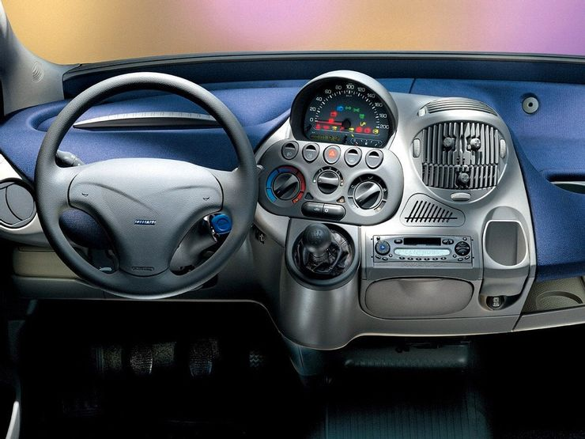
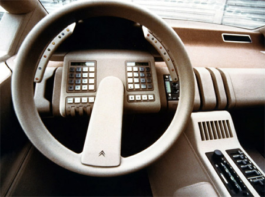
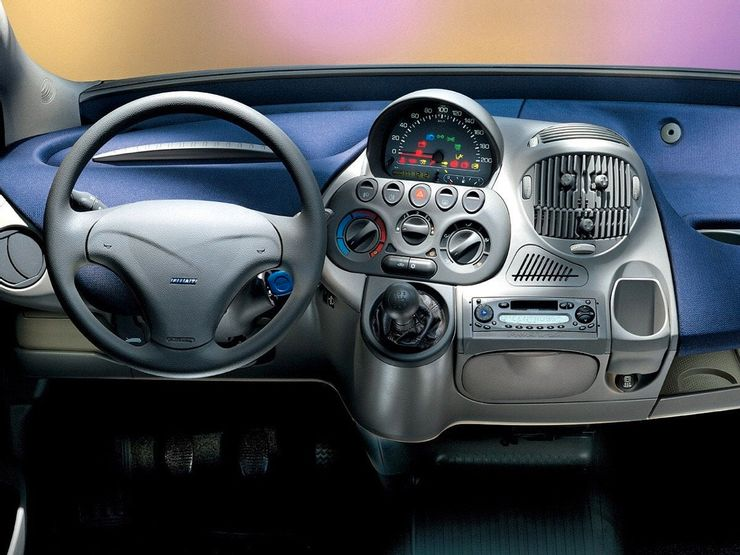
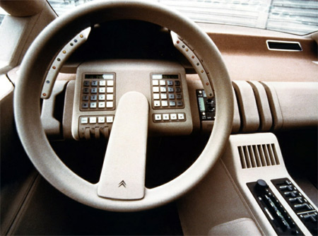
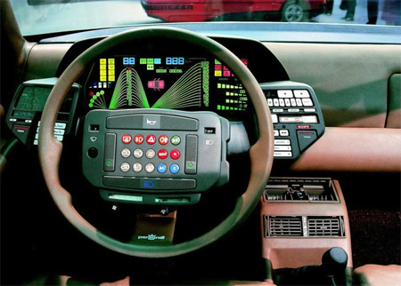
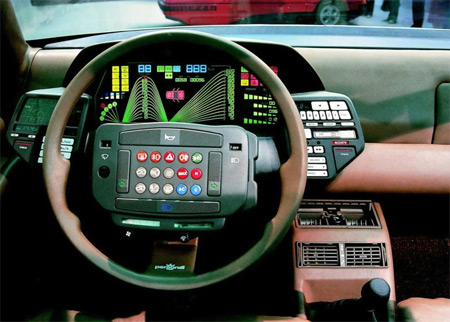

Human Computer Interaction
Project 2
Answers for C:
Car Dashboard Case study:
5 car dashboard examples selected for the project :
 



 

Cons of the current designs:
• too many buttons are present on the dashboard hence making it confusing for the user .
• position of the meters are not in the eyeline of the driver. therfore, it can be dangerous to keep an eye on the meters for warning signs during driving.
• Use of analog meters makes it hard to read for the new users to understand.
• Different screens are used for different meters like speedometer, tachometer and other warning signs.
• Occupies a lot of space and ruins the look of the interior of the car.
• User cannot get the exact values of speed and rpm because of the use of analog meter.
Answers for B:
Common Uses of microwave:
• Reheating food
• Cooking
• Disinfecting kitchen products (like sponges)
• Defrost food
• Steaming vegetables
Rare Uses of microwave:
• Baking
• Drying herbs
• Proofing yeast
• Recrystallizing honey
• Revive stale bread
The current design of the microwave which is taken as an example for this project does not make these uses easy because to use the functions of the microwave the current design may prove to be confusing for the user. In the current design there are specific codes assigned to different functions like braking, grill etc. which needs to be memorized by the user in order to use the functions and hence can be confusing.
User interaction with the microwave:
To use the microwave the user needs to interact with the microwave through the interface provided. The user uses the variety of buttons provided on the interface to use the microwave. Each button has its own function. Every function is initiated by pressing a button from the interface.
The common sequence of actions to use the microwave:
• Open the door of the microwave by pushing the OPEN button.
• Place the item that needs to be heated inside the microwave.
• Close the main door of the microwave.
• Select the function (for example reheat, warm, cook, grill) by pressing the button provided in the interface.
• Set the time duration for the selected function.
• Press the START button to start the function.
• Once the function time is completed or the function is stopped by pressing the STOP button, Open the door by pressing OPEN button to take the item out.
The microwave interface comes with the names and labels of the function on the buttons. The microwave also comes with a manual to guide the user through all the functions of the microwave and provides complete details about how to use the microwave.
Feedbacks provided by the microwave to the user:
• When the timer button is pressed it changes the changes the duration of the function which is displayed on the display. Hence the microwave provides this visual feedback to the user by changing the time on the display so that user can know that a change has taken place.
• Once any function of the microwave is started or when the door is open, a light glow inside the microwave that can be seen through the main window. Thus, light acts as a feedback to user to tell him/her that the microwave is on.
• When the function is completed and the timer reaches zero, the microwave gives a beep sound alarm indicating that the function is completed.
• The microwave provides a sound feedback whenever a button is pressed. This lets the user know that the button is pressed successfully.
Some common mistakes with the current design:
• Opening the door of the microwave:
In the current design no handle is provided and the open has no markings and the button is of same color as the background of the body thus making it hard and confusing to locate the button to open the door.
• For several functions like baking, grill, etc there is a specific code that appears on the display. To carry out these functions the user must know all these codes else it can be confusing.
• No indications are provided on the display for differentiating between the clock and the timer.
My design sketch to overcome the above mentioned mistakes:

1: Display
1(a): Numeric display
1(b): Clock display (It is on when the display shows the current time)
1(c): Function display (It shows the type of function when the microwave is on.
2: Timer Switch
2(a) Start/Stop button
2(b) Timer increase button
2(c) Timer decrease button
2(d) Clock set button (used to set the clock time)
3: Function Switch

4: Main Door
5: Display window
6: Main door handle
7: Main door open button
Key feature of my design:
1. Has a properly visible button placed on the handle to open the door.
2. Has simple function button to operate. The user does not need to memorize any codes for any function.
3. Proper indication present on the display to differentiate clock time and microwave timer.
4. The display also has some additional information like a separate icon for each function. The icon glows when the respective function is running.
5. The microwave interface has proper naming and indication for every button. The interface also includes Braille Scripted Name for every function for visually impaired users.
6. The presence of icons on the interface for every function makes it easy to use for old aged people and children who find it difficult to read the small font of the text.